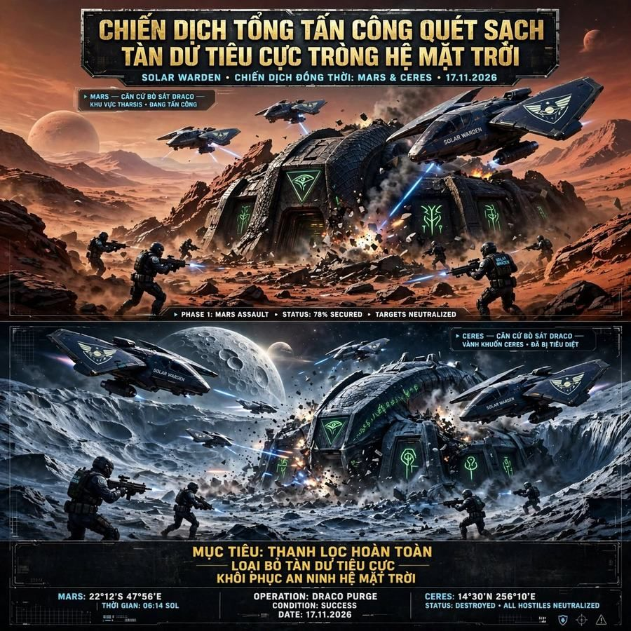
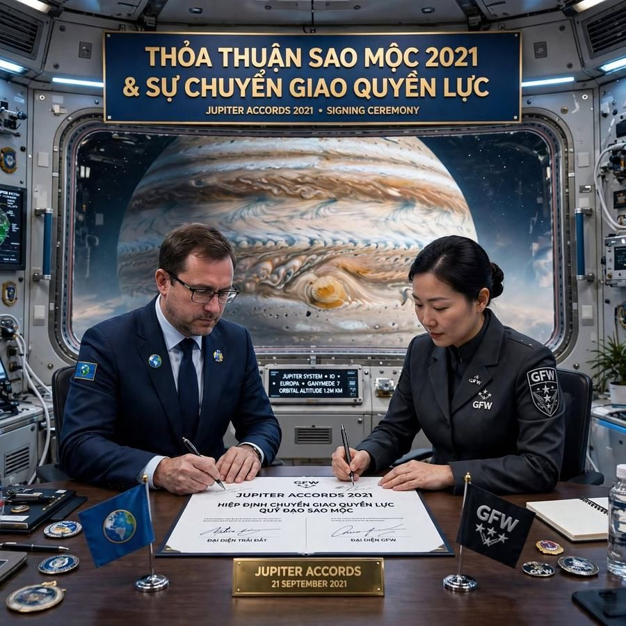
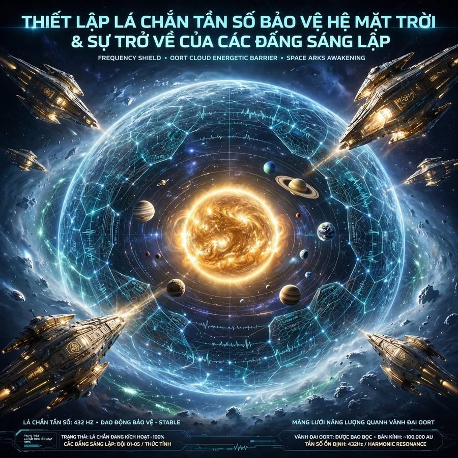
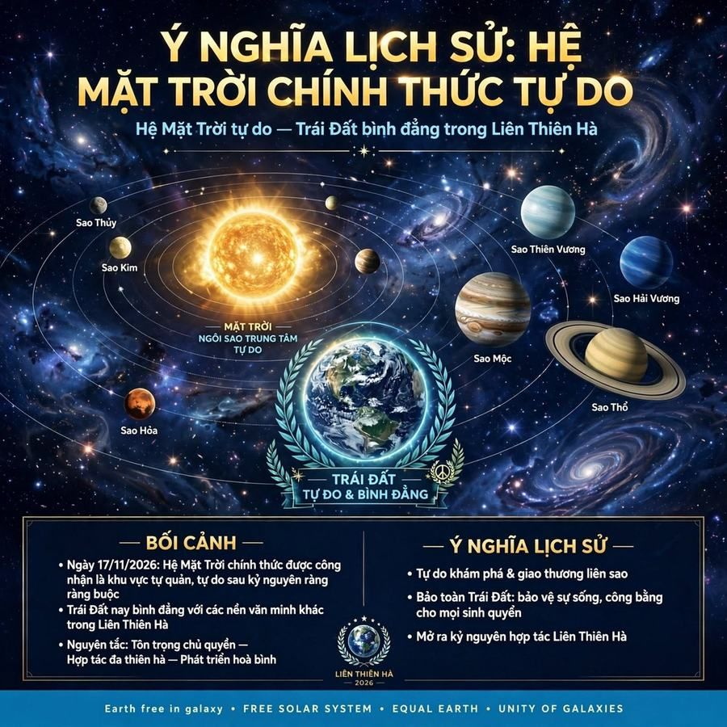
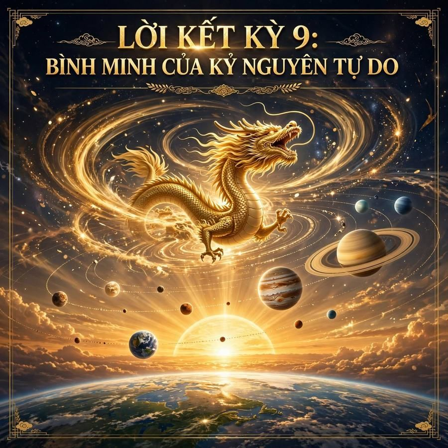

Trang chủ / Chuyên đề 5: Chương Trình Không Gian Bí Mật / Kỳ 49
Chuyên đề 5 · Kỳ 49 / 90
CUỘC GIẢI PHÓNG TOÀN DIỆN HỆ MẶT TRỜI CỦA LIÊN ĐOÀN THẾ GIỚI THIÊN HÀ (GFW)

Ở Kỳ 8, chúng ta đã cùng nhau chứng kiến trận chiến bầu trời lịch sử giải phóng đại lục Nam Cực, quét sạch sào huyệt nòng cốt của Hạm Đội Đen (Dark Fleet) và sự tháo chạy hoảng loạn của giới tinh hoa ngầm sang Nam Mỹ. Sự sụp đổ của căn cứ Nam Cực đã tạo ra một hiệu ứng domino giải phóng trên toàn bộ địa cầu. Tuy nhiên, để bảo đảm sự an toàn vĩnh viễn cho Trái Đất và loài người, cuộc chiến không dừng lại ở bề mặt hay lòng đất, mà tiếp tục mở rộng ra quy mô toàn Hệ Mặt Trời. Hôm nay, chúng ta sẽ bước vào giai đoạn quyết định nhất của lịch sử không gian hiện đại: Chiến dịch giải phóng toàn diện Hệ Mặt Trời do Liên Đoàn Thế Giới Thiên Hà (Galactic Federation of Worlds — GFW) phối hợp với Lực lượng Liên minh Trái Đất thực hiện! Cuộc tổng tấn công quét sạch tàn dư tiêu cực của phe Bò sát Ciakahrr và Tập thể Orion Grey trên Sao Hỏa, tiểu hành tinh Ceres và các Mặt Trăng của Sao Thổ đã diễn ra như thế nào? Sự thật về Thỏa Thuận Sao Mộc (Jupiter Accords 2021) — nơi các đại diện Trái Đất và Liên Đoàn Thiên Hà đặt bút ký kết quyết định trao trả toàn bộ quyền kiểm soát Hệ Mặt Trời cho loài người — ra sao? Hệ thống lá chắn bảo vệ tần số mới được thiết lập để ngăn chặn mọi sự xâm lược bên ngoài vận hành ra sao?
1. CHIẾN DỊCH TỔNG TẤN CÔNG QUÉT SẠCH TÀN DƯ TIÊU CỰC TRONG HỆ MẶT TRỜI
Sau chiến thắng tại Nam Cực, Liên Đoàn Thế Giới Thiên Hà (GFW) cùng Hạm đội Solar Warden và Liên minh Trái Đất đã mở chiến dịch quân sự quy mô lớn chưa từng có nhằm quét sạch mọi căn cứ tiêu cực còn sót lại ngoài không gian. A. Quét Sạch Pháo Đài Bò Sát & Người Xám Tại Sao Hỏa & Ceres
- Tiến Tấn Công Các Căn Cứ Ngầm Tiêu Cực: Lực lượng Liên minh đã mở các đợt tấn công chính xác vào các đại căn cứ ngầm của phe Bò sát Ciakahrr và các tập đoàn tiêu cực tại Sao Hỏa, tiểu hành tinh Ceres và Mặt Trăng Titan (của Sao Thổ).
- Vô Hiệu Hóa Vũ Khí Tần Số Tiêu Cực: Bằng việc sử dụng vũ khí năng lượng vô hướng lượng tử, GFW đã làm tê liệt hoàn toàn hệ thống radar, lá chắn từ trường và các trạm phát sóng kiểm soát tâm trí của đối phương. B. Giải Cứu Hàng Ngàn Nô Dịch Lao Động Vũ Trụ
- Đập Tan Ma Trận Nô Dịch ICC: Hàng ngàn nhà khoa học, kỹ sư và lao động bị giam cầm tại các thuộc địa Sao Hỏa và xưởng đóng tàu Ceres đã được lực lượng GFW giải cứu, đưa về các tàu y tế thiên hà để chữa lành thể xác và tâm lý.

2. THỎA THUẬN SAO MỘC (JUPITER ACCORDS 2021) & SỰ CHUYỂN GIAO QUYỀN LỰC
Một trong những sự kiện ngoại giao thiên hà quan trọng nhất thế kỷ 21 chính là chuỗi hội nghị thượng đỉnh bí mật diễn ra tại quỹ đạo Sao Mộc vào tháng 7 năm 2021. A. Hội Nghị Thượng Đỉnh Tại Quỹ Đạo Sao Mộc
- Cuộc Gặp Giữa Các Thế Lực Ánh Sáng: Hội nghị quy tụ các đại diện tối cao của Liên Đoàn Thế Giới Thiên Hà (GFW), Hội Đồng Tiên Nữ (Andromedan Council), Liên Minh Các Đấng Sáng Lập (Seeders / High Council) và các chỉ huy cấp cao của Lực lượng Liên minh Trái Đất cùng Lực lượng Không gian Mỹ (USSF). B. Ký Kết "Thỏa Thuận Sao Mộc" (Jupiter Accords)
- Trao Trao Quyền Kiểm Soát Hệ Mặt Trời Cho Trái Đất: Thỏa thuận lịch sử chính thức xác nhận: Hệ Mặt Trời vĩnh viễn thoát khỏi sự cai trị hay thao túng của bất kỳ đế chế xâm lược bên ngoài nào!
- Chuyển Giao Cơ Sở Hạ Tầng Không Gian: Toàn bộ các cơ sở đóng tàu, trạm không gian và căn cứ nghiên cứu ngoài vũ trụ được chuyển giao cho Liên minh Trái Đất hòa bình quản lý, chuẩn bị cho Kỷ nguyên thương mại và du hành không gian công khai.

3. THIẾT LẬP LÁ CHẮN TẦN SỐ BẢO VỆ HỆ MẶT TRỜI & SỰ TRỞ VỀ CỦA CÁC ĐẤNG SÁNG LẬP
Chiến thắng của GFW không chỉ dừng lại ở mặt quân sự mà còn đi kèm với sự nâng cấp tần số năng lượng toàn diện cho toàn bộ Hệ Mặt Trời. A. Lá Chắn Bảo VỆ Tần Số Cao (Frequency Shield)
- Phong Hỏa Ranh Giới Hệ Mặt Trời: GFW đã thiết lập một màng lưới bảo vệ tần số vô hướng xung quanh vành đai Oort ở ranh giới ngoài cùng của Hệ Mặt Trời, ngăn chặn hoàn toàn việc các hạm đội tiêu cực từ bên ngoài thâm nhập trở lại. B. Sự Trở Về Của Liên Minh Các Đấng Sáng Lập (The Return of the Seeders)
- Khởi Động Lại Các Con Tàu Space Arks: Sự giải phóng Hệ Mặt Trời đã kích hoạt làn sóng trở về của Liên Minh Các Đấng Sáng Lập (24 chủng tộc gieo mầm di truyền nguyên thủy). Các con tàu Hòm Không Gian (Space Arks) cổ đại chôn sâu dưới đất Trái Đất, Mặt Trăng và Sao Hỏa đã đồng loạt "thức tỉnh" , phát ra các chùm ánh sáng kết nối lại mã gen cho loài người.

4. Ý NGHĨA LỊCH SỬ: HỆ MẶT TRỜI CHÍNH THỨC TỰ DO
Chiến dịch giải phóng toàn diện của GFW đánh dấu bước ngoặt vĩ đại nhất trong lịch sử loài người Trái Đất:
- Khép Lại Hàng Ngàn Năm Nô Dịch Bóng Tối: Ma trận giam cầm Trái Đất trong sự cô lập và sợ hãi đã bị đánh sụp hoàn toàn. Không còn bất kỳ lực lượng tiêu cực nào có quyền thao túng vận mệnh của chúng ta!
- Trái Đất Bước Vào Trật Tự Thiên Hà: Nhân loại Trái Đất chính thức thoát khỏi danh nghĩa "hành tinh bị cô lập" để trở thành một dân tộc có chủ quyền, bình đẳng và sẵn sàng tham gia vào Cộng đồng Liên thiên hà hòa bình!

5. LỜI KẾT KỲ 9: BÌNH MINH CỦA KỶ NGUYÊN TỰ DO
Kỳ 9 của chuyên đề 5 khép lại khi tiếng rồng chiến thắng vang vọng khắp Hệ Mặt Trời:
- Ánh Sáng Đã Chiến Thắng Hoàn Toàn: Sự phối hợp quả cảm giữa Lực lượng Liên minh Trái Đất và Liên Đoàn Thế Giới Thiên Hà đã đòi lại sự tự do chân chính cho bầu trời của chúng ta.
